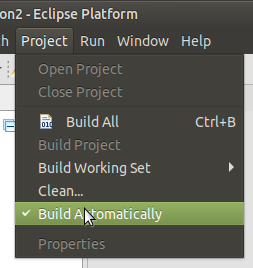

The Eclipse Project dropdown menu has a menu item named "Build Automatically".

Normally this should be checked. When checked, saving a valid SADL files will cause it to be translated to OWL and saved as OWL as well. This is necessary to be able to do many operations in the SADL IDE, e.g., generate graphs, run inference, etc., as these operations use the OWL translations, not the SADL files themselves. If "Build Automatically" is not checked, the project can still be built on demand using "Build All" but the user will be responsible to make sure the project is built following any edits.